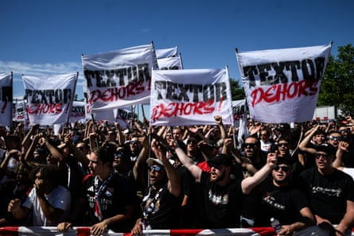

A champion skateboarder in his youth, John Textor has never been averse to risk. The American businessman even warrants a mention in Craig Snyder’s book A Secret History of the Ollie as “one of the few who beat eight-time world champion Rodney Mullen in freestyle competitions during the turn of the 70s”, but a serious head injury put an end to his competitive career.
Textor surprisingly turned his attention to football club ownership in 2021 when he bought a stake in Crystal Palace after making his fortune in digital technology and the next week could prove decisive for his latest venture.
The New York Jets owner, Woody Johnson, is poised to complete his purchase of Textor’s 43% share in the FA Cup winners if – as expected in the coming days – he passes the Premier League’s owners’ and directors’ test. However, Palace’s participation in the Europa League appears to rest on the outcome of Lyon’s appeal against their relegation from Ligue 1 .
That is due to be heard this week by French football’s national directorate of management control (DNCG), with Lyon – who are also owned by Textor’s company Eagle Football Holdings – having accepted in a meeting with Uefa that if they fail they would relinquish their Europa League place and clear the way for Palace.
In an attempt to increase hopes of winning the appeal, given his rocky relationship with the DNCG since Textor bought out Jean-Michel Aulas in June 2022, he announced last Monday that he had resigned from his leadership roles at Lyon.
Michael Gerlinger has been appointed as chief executive and Michele Kang – who also owns the Washington Spirit and London City Lionesses and bought Lyon’s extremely successful women’s team from Eagle Football Holdings last year – as chair and president. On Friday Lyon were fined €12.5m (£10.8m) by Uefa for a breach of financial sustainability requirements. Reports in France say Lyon must inject €70m to be allowed to play in Ligue 1 next season.
Should the appeal fail, Textor is understood to be confident Lyon will be cleared, even if it it means ending up in court. But with the American fund Ares Management, that provided a €425m loan to complete the purchase of Lyon, breathing down his neck, time is of the essence. Eagle Football was listed for an initial public offering in the United States last month, with Textor understood to want to begin selling shares in September.
Lyon ultras protest against John Textor after the club were relegated to Ligue 2.Photograph: Jeff Pachoud/AFP/Getty Images
He is believed to have spent the weekend in the Bahamas after stating he was “looking forward to the reduction of my day-to-day management responsibilities in Europe, so I can focus on markets where we have the full freedom to run our football clubs … to invest, innovate, grow and compete. OL [are] in great hands with Michele, and I will focus on Botafogo , Daring Brussels and our next club in England.”
Sheffield Wednesday, who have been banned from spending money on transfers until January 2027 after the repeated failure to pay players’ wages, have been mooted as a potential target once the sale of his Palace shares to Johnson is ratified, although Dejphon Chansiri is reported to want more than £150m for the Championship club. Textor has held talks with Watford’s owner, Gino Pozzo, about investing at Vicarage Road in the past.
Textor’s close relationship with Evangelos Marinakis – the Nottingham Forest owner whose side would stand to be promoted to the Europa League should Uefa rule against Palace – has led to several players moving from Botafogo and Lyon to the City Ground over the past 12 months. Igor Jesus’s signing was announced on Saturday and Jair Cunha could be to be latest after the Brazilian champions’ elimination from the Club World Cup that cost the coach, Renato Paiva, his job as Textor was unhappy with team selection and formation.
“I’m shocked,” Paiva said of his dismissal, “and the staff and players are open-mouthed about the decision.” He was appointed in February after Artur Jorge led Botafogo to victory in the Copa Libertadores in 2024. Textor is said to be leading the search for the coach’s successor.
Textor’s frustration over his lack of influence at Palace led to a breakdown in relations with the chair, Steve Parish. Despite holding the biggest stake, Textor was unable to persuade Parish and his fellow American co-owners Josh Harris and David Blitzer that Palace should be fully integrated into Eagle Football’s multi-club network, and repeated efforts to take full control – like his attempt to buy Everton – failed.
He has taken credit for last year’s appointment of Oliver Glasner, having spoken to him about the vacancy at Lyon a few months earlier. But it is understood Palace produced evidence of correspondence between the Austrian manager, Parish and the then sporting director, Dougie Freedman, to support their argument to Uefa that Textor played no part in their decision-making process. If a shareholder has a decisive influence over more than one club, those clubs are not allowed to play in the same Uefa tournament.
Palace are expected to appeal to the court of arbitration for sport (Cas) should the decision go against them, with Forest – the first visitors of the Premier League season to Selhurst Park on 23 August – likely to do the same if Palace are cleared to play in the Europa League. It will be intriguing to see whose side Textor is on if summoned to give evidence to Cas in Lausanne.
He officially resigned as a director of Palace’s board on 18 June and Parish will be hoping that Johnson, who described a report that named him as the NFL’s worst owner this year as “bogus”, can provide some stability and finances as they anxiously await their fate in Europe.